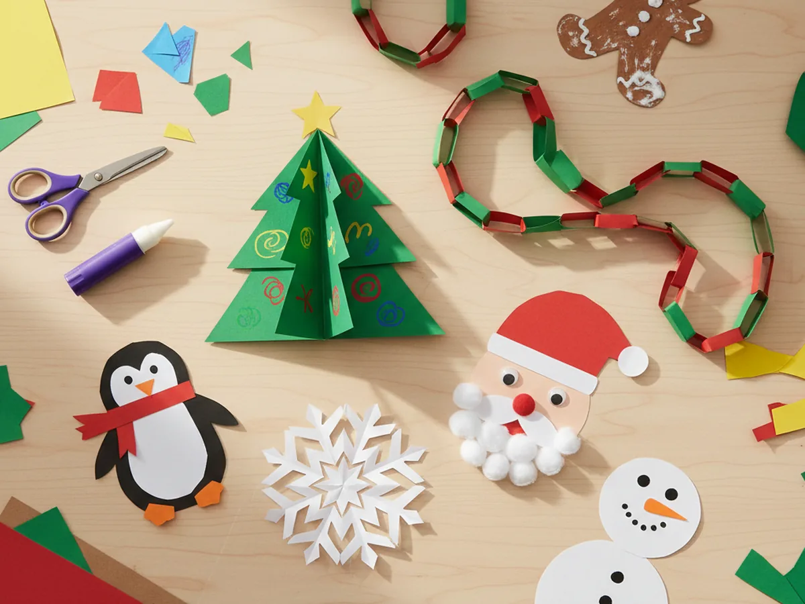
If you have a kindergartener at home, you already know that the holidays feel extra magical through their eyes. These Christmas paper crafts for kindergarten are designed with exactly that in mind: simple steps, basic supplies, and results that will make your little one beam with pride. All you need is a stack of construction paper, a pair of scissors, and a little holiday spirit. 🎄
Every idea on this list is beginner-friendly and low-stress, so you can actually enjoy the crafting session right alongside your child instead of stressing over complicated instructions.
What You'll Need
These supplies cover most of the 20 ideas below, so a quick supply-drawer check is all it takes to get started. ✂️
- Construction paper (assorted colors), choose a pack with red, green, white, and brown for the most versatility.
- Child-safe scissors, rounded tips are ideal for kindergarteners still building their cutting skills.
- Glue sticks, the disappearing purple kind makes it easy for kids to see exactly where they have applied glue.
- Self-adhesive googly eyes, peel-and-stick style keeps things simple and mess-free.
- Washable glitter glue, perfect for adding festive sparkle that wipes right off little hands.
- Scotch tape, for joining paper strips and holding shapes in place.
- Washable markers or crayons, for adding details and personal touches.
20 Christmas Paper Crafts for Kindergarten
1. Layered Paper Christmas Tree
Cut three green triangles in graduated sizes and stack them on a small brown rectangle trunk. Your kindergartener can decorate the tree with marker-drawn ornaments, a paper star on top, and dots of glitter glue for lights. This is one of those Christmas paper crafts for kindergarten that looks really put-together while being completely manageable for a five-year-old. Pre-cut the triangles if your child is still working on cutting straight lines.
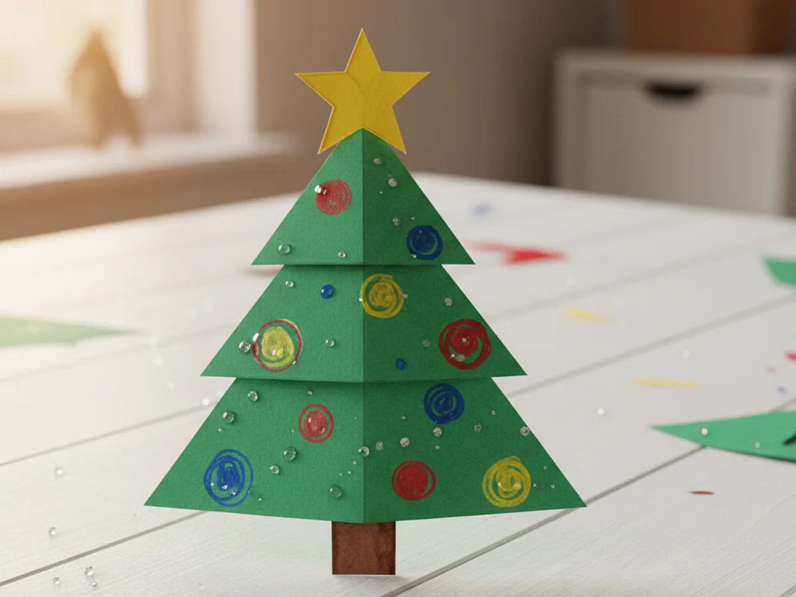
2. Paper Chain Christmas Garland
Cut strips of red and green construction paper, loop each one into a ring, and glue or tape the ends together to form a classic holiday chain. Kids can work on this one for as long as they like, making the garland as long as the room. It is a satisfying activity because the result grows right before their eyes with every new link added.
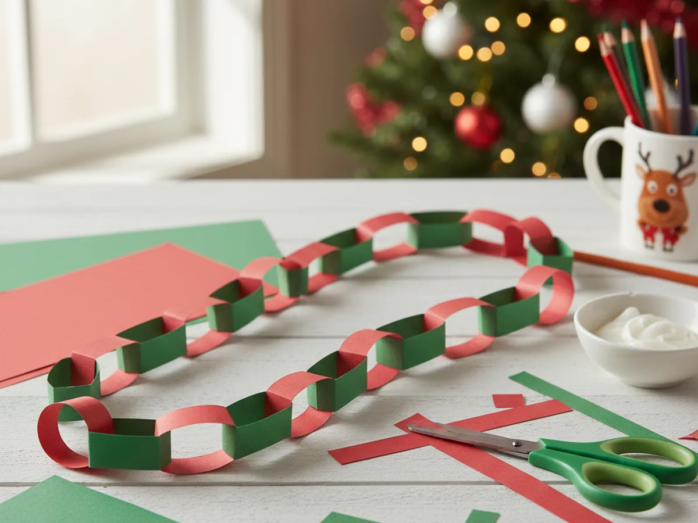
3. Paper Snowflake Cutting
Fold a square of white paper in half, then fold it in thirds, and snip small notches and triangles along every folded edge. When your child opens it up, a beautiful unique snowflake is revealed. Kindergarteners love the surprise of unfolding the paper, and no two snowflakes ever come out the same way.
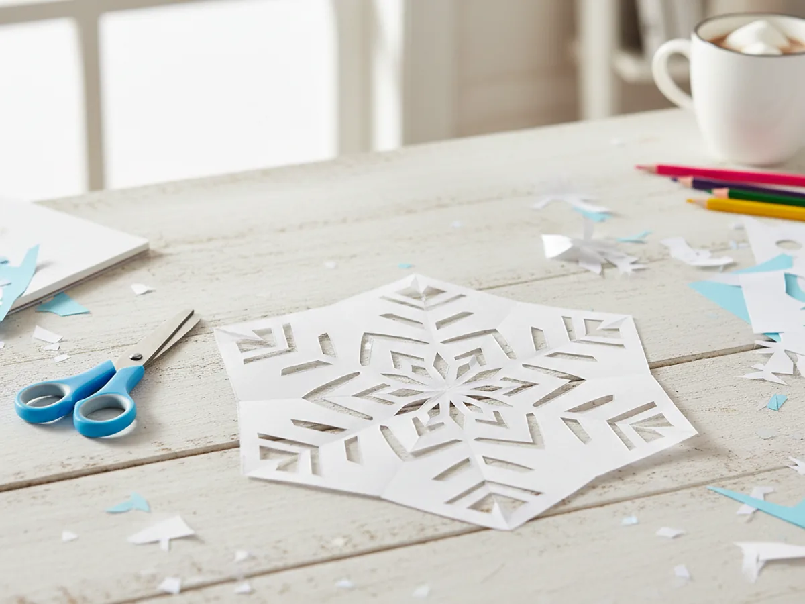
4. Paper Santa Claus Face
Start with a large flesh-toned or peach circle for the face, add a red triangle hat, a strip of white paper for the hat brim, and let your child draw on Santa's rosy cheeks and smile. Fluffy white paper strips or cotton ball trim along the hat edge gives it an instantly cozy holiday feel. This one looks absolutely adorable displayed on a window or door.
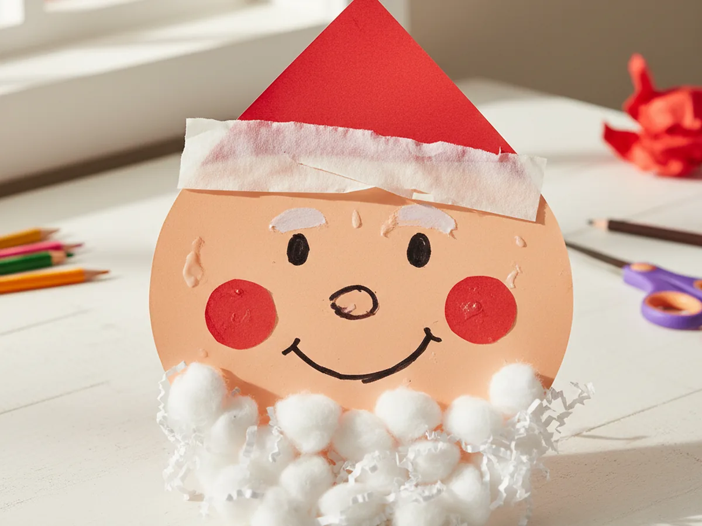
5. Paper Reindeer Card
Trace your child's hand on brown construction paper, cut it out, and flip it upside down so the fingers become the antlers. Glue two googly eyes and a red paper circle nose onto a separate face circle, then attach the antler hand at the top. Fold a piece of cardstock in half and mount the reindeer face on the front for a keepsake card grandparents will treasure.
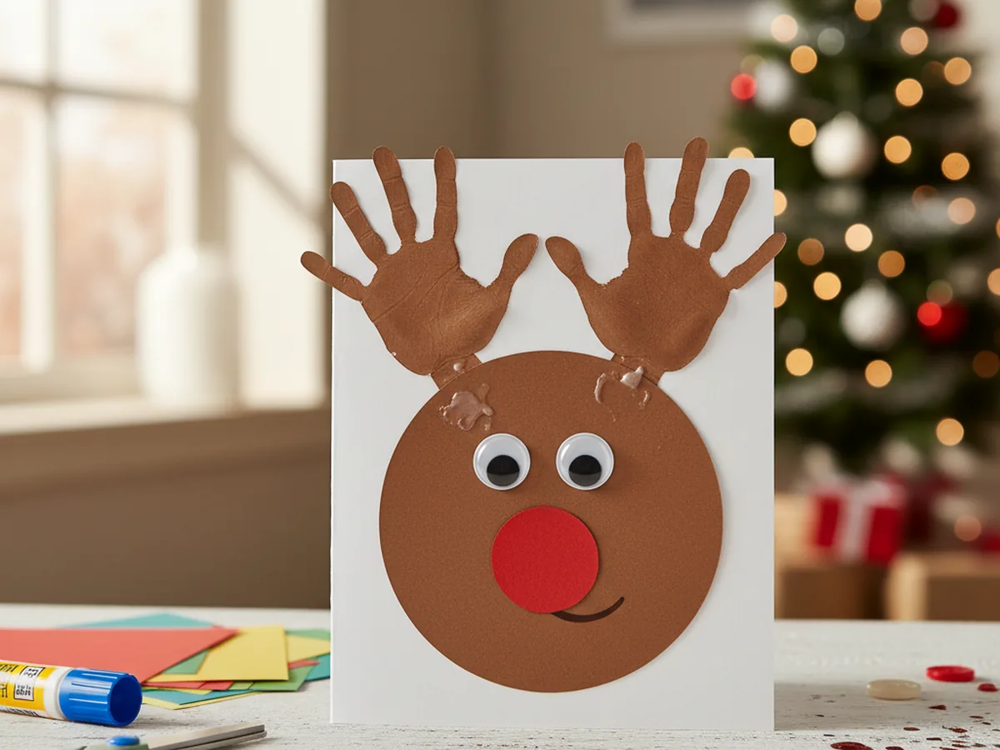
6. Paper Strip Ornament Ball
Cut eight strips of paper in the same width, stack and staple them through the center, then fan the strips out into a sphere shape and staple the two ends together to form a 3D ball. Hang it from a piece of string for a beautiful ornament your child made entirely from paper. Use gold or silver cardstock for an extra-special result that looks store-bought.
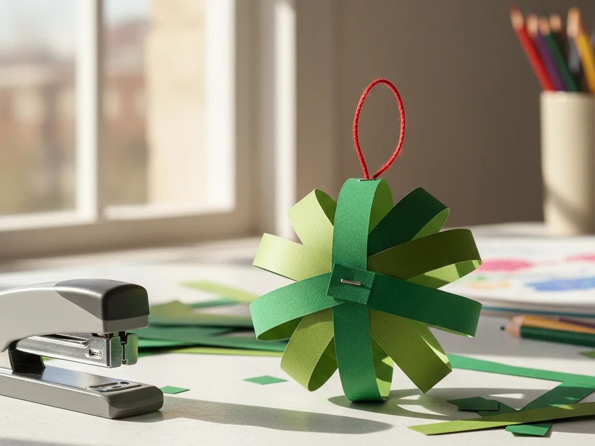
7. Accordion Paper Christmas Tree
Fold a long green strip of paper back and forth in tight accordion folds. Stand it up and fan it into a half-circle, then tape or glue the ends together so it fans out into a full flat tree shape. Add a paper star on top and let your child decorate the folds with small dot stickers or marker-drawn baubles. These look wonderful lined up in a row on a windowsill.
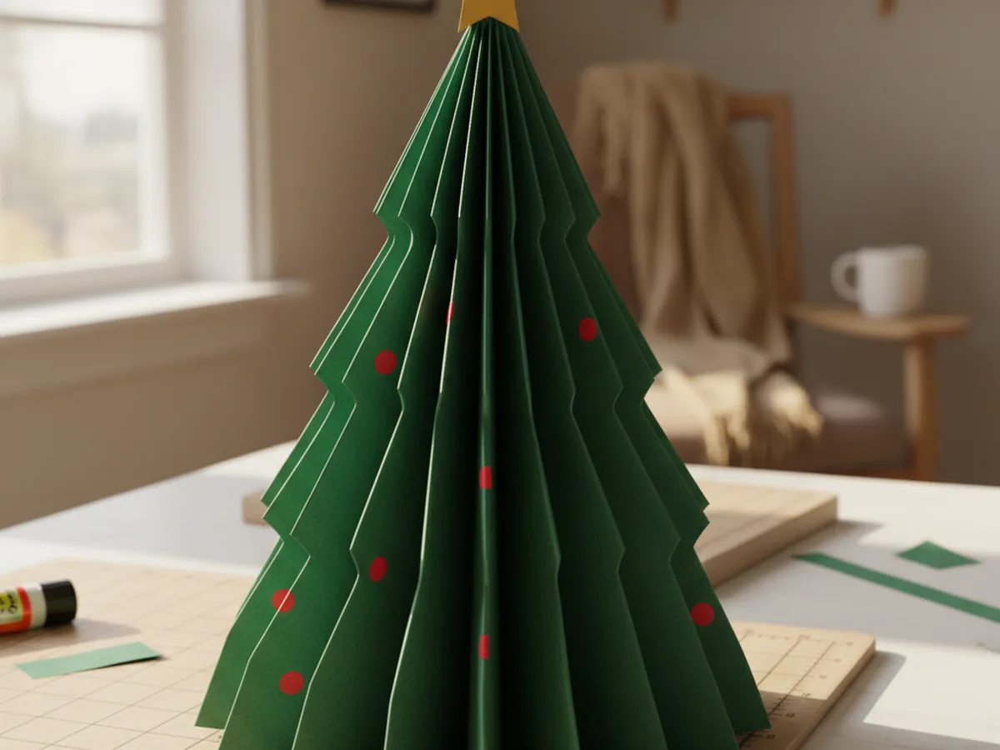
8. Paper Elf Figure
Assemble a cheerful elf from simple paper shapes: a green cone hat, a round flesh-toned face, a striped rectangular body, and thin paper strips for arms and legs. Add googly eyes, a tiny red circle nose, and draw on a big smile. Kindergarteners love making whole elf families and arranging them around the house as holiday decorations.
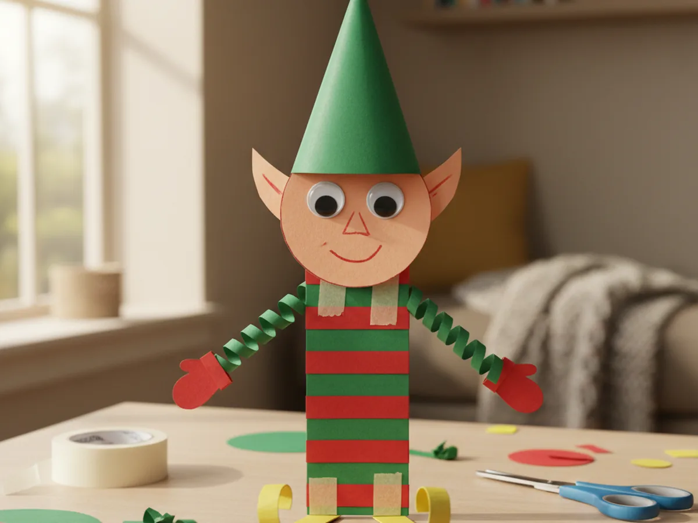
9. Paper Angel
Roll a white rectangle into a cone for the angel's dress and secure with tape. Cut a small circle for the head and glue it to the top of the cone. Cut two teardrop shapes for wings and attach them to the back. A halo made from a small gold paper circle on a toothpick finishes the look beautifully. These kindergarten Christmas paper crafts make sweet table centerpieces for the holiday dinner.
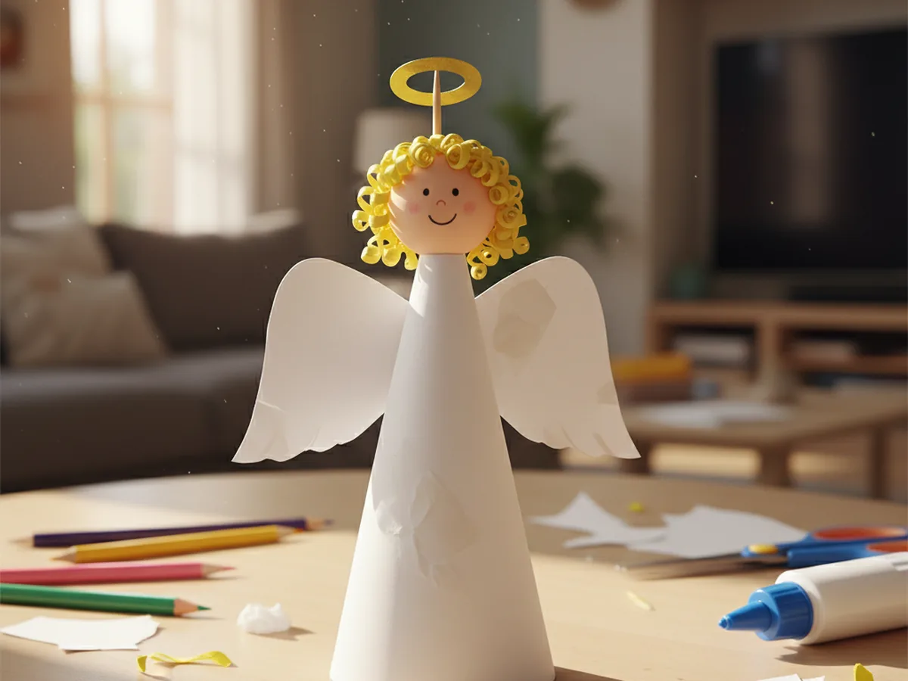
10. Paper Candy Cane
Cut long strips of red and white paper and spiral them around each other, gluing as you go, then bend the top into a hook shape. You can also cut a candy cane outline from white paper and let your child color on the red stripes themselves. Either way, this is one of the quickest and most satisfying Christmas paper crafts for kindergarteners on the list.
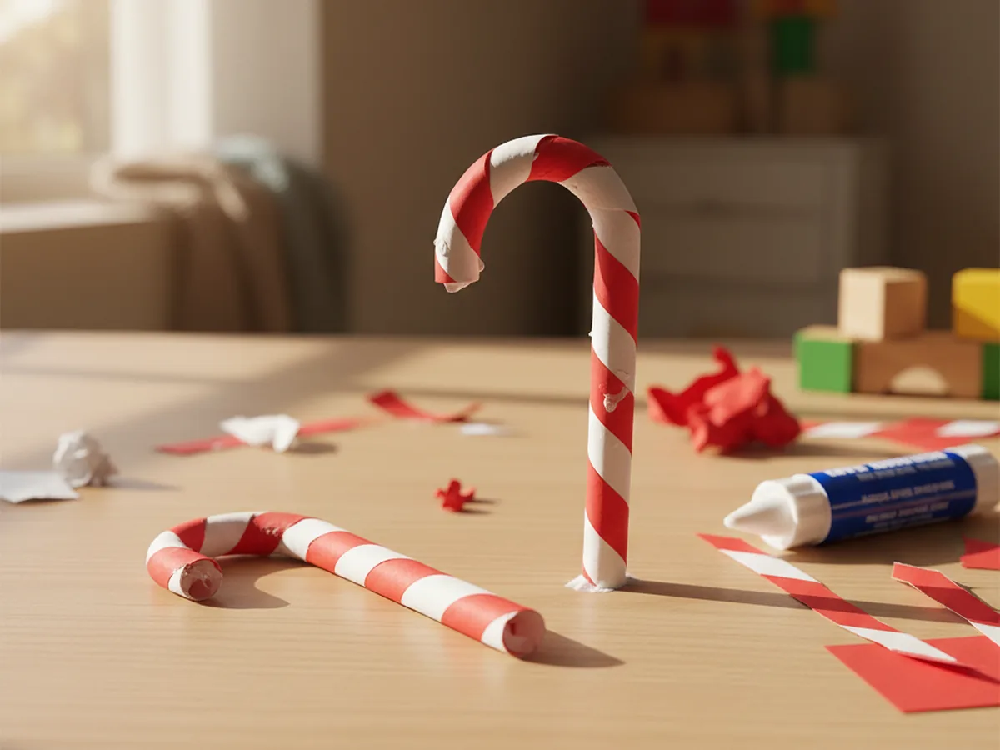
11. Paper Christmas Lantern
Fold a rectangle of red or green paper in half lengthwise, cut evenly spaced slits from the folded edge almost to the open edge, then unfold and roll into a cylinder, taping the short ends together. Add a strip of contrasting paper as the handle at the top. These classic paper lanterns are endlessly festive and take only a few minutes to make.
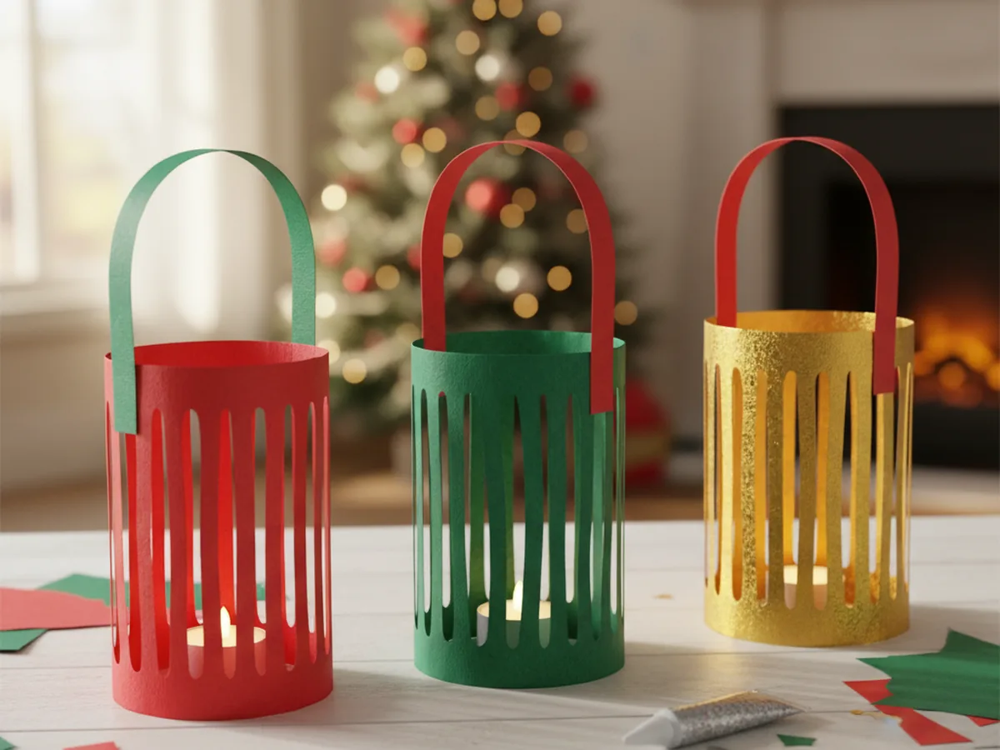
12. Paper Gingerbread Man
Cut a gingerbread man shape from brown construction paper and let your child decorate it with white glue "icing" swirls, small red dot buttons, and a drawn-on smiley face. For a fun variation, write your child's name on the tummy and display them as personalized holiday decorations. Kids love making several of these and lining them up in a row. 🍪
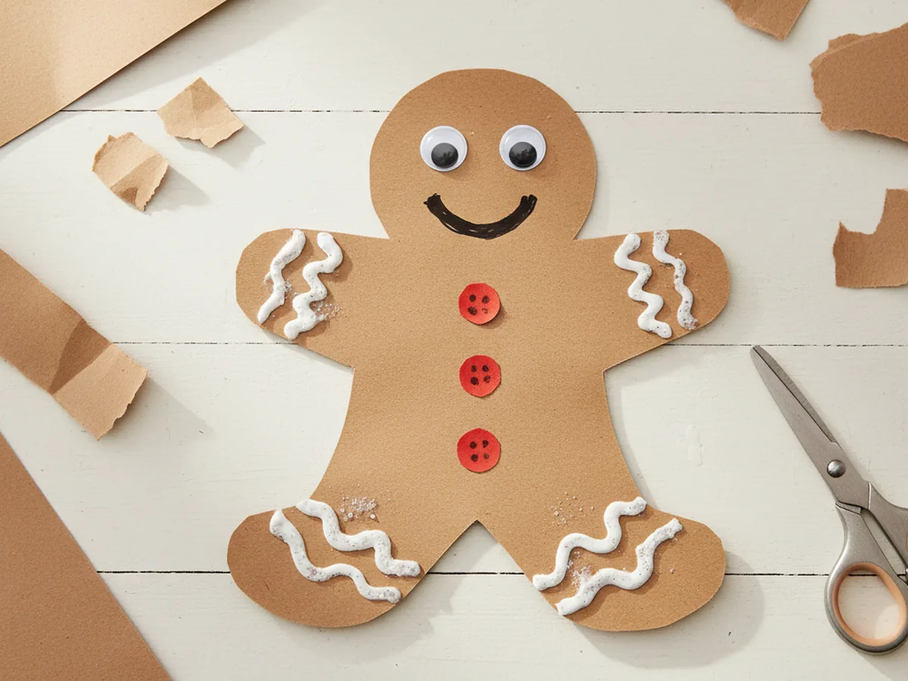
13. Paper Christmas Stocking
Draw and cut a simple stocking shape from red or green cardstock, then let your child decorate the cuff with white paper trim and fill it with small cut-out paper presents, candy canes, and stars. Punch a hole at the top and add a ribbon loop for hanging. This one doubles as a gift card holder or a little surprise bag for a sibling.
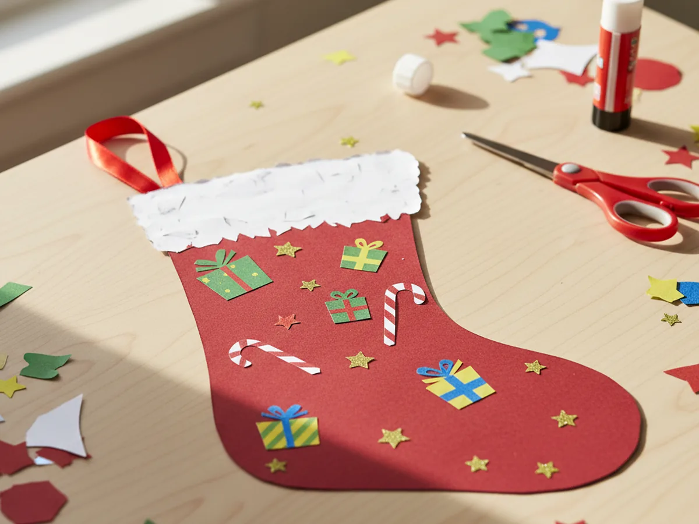
14. Paper Christmas Card
Fold a piece of cardstock in half to form the card, then let your child decorate the front with cut paper shapes: trees, stars, snowflakes, or whatever feels festive to them. Inside, help them write a short holiday message or draw a picture for someone they love. Handmade cards are often the gift people hold onto the longest.
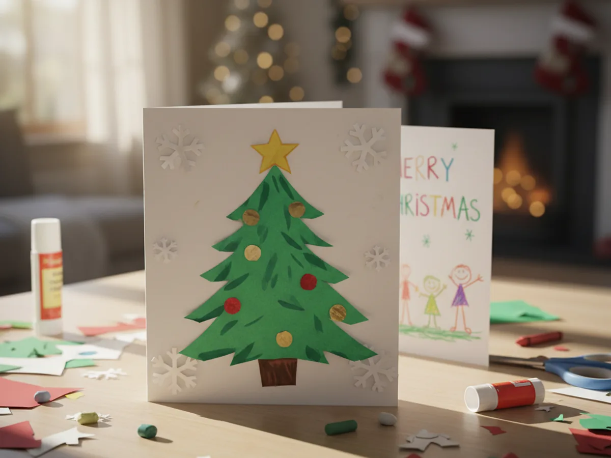
15. Paper Christmas Bell
Roll a half-circle of gold or yellow cardstock into a cone and tape the edge. Add a small brown paper strip as the clapper hanging from the open bottom, and decorate the outside with glitter glue dots or a holly leaf cut from green paper. Hang a cluster of three bells at different heights from a single ribbon for a beautiful front-door display.
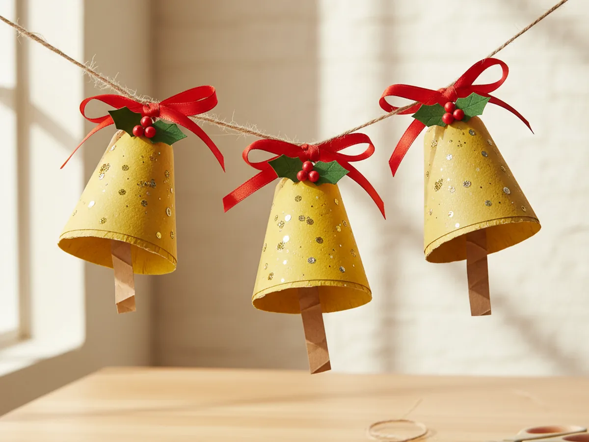
16. Paper Penguin with Scarf
Cut a large black oval for the penguin's body, a white oval for the belly, two small black wing shapes, and an orange triangle beak. Glue everything together and add googly eyes for that irresistible wide-eyed penguin look. The finishing touch is a tiny red and white striped paper scarf around the neck, which makes this one of the cutest paper crafts for kindergarten on the list.
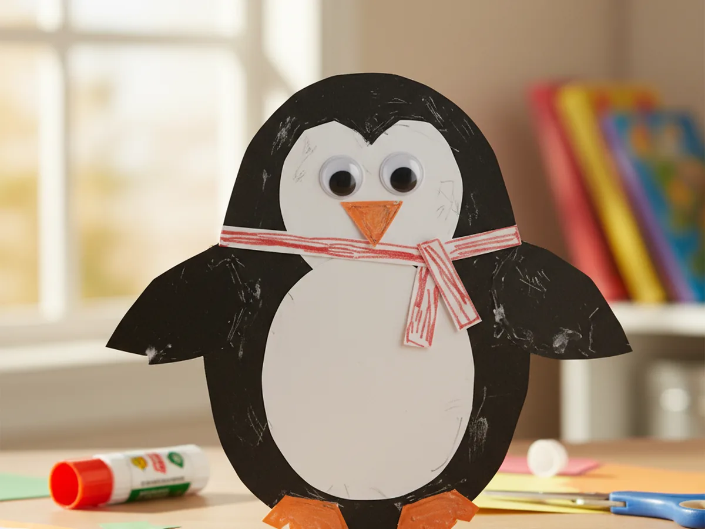
17. Paper Poinsettia Flower
Cut several large red teardrop or leaf shapes and arrange them in a circle, gluing them to a white base paper to form the flower petals. Cut a cluster of small yellow circles and glue them in the center. These bright paper poinsettias make lovely holiday table decorations and help introduce children to one of the most iconic Christmas flowers.
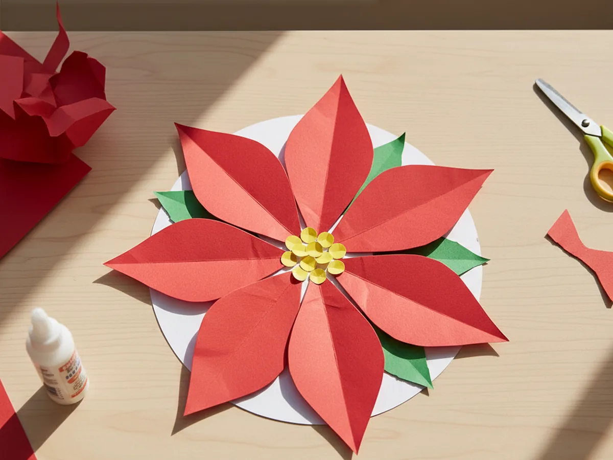
18. Paper Snowman
Cut three white circles in graduated sizes and stack them vertically on a blue or night-sky background. Add a black paper top hat, stick arms cut from brown paper, a carrot-orange triangle nose, and small black circles for the eyes and buttons. This Christmas paper craft for kindergarten kids is simple enough for very young children and looks wonderfully cheerful on any fridge or wall.
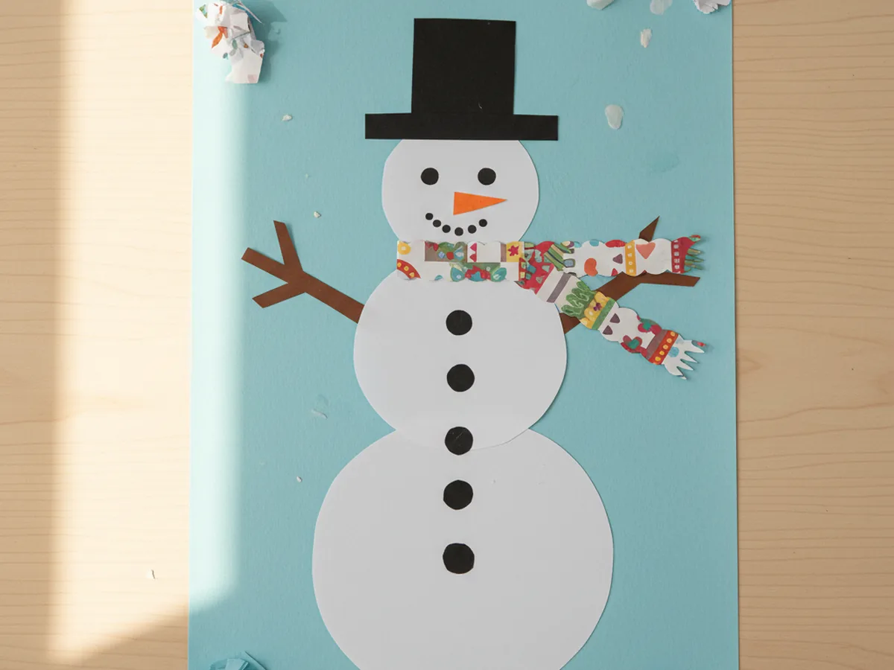
19. Paper Christmas Star
Cut five identical squares of gold or yellow paper and fold each one diagonally to form a triangle. Arrange the five triangles with their points facing outward like a star, overlapping the bases, and glue them together. The result is a bold five-pointed star that looks striking hanging in a window or displayed at the top of a paper Christmas tree. Older kindergarteners enjoy making a whole constellation of different-sized stars.
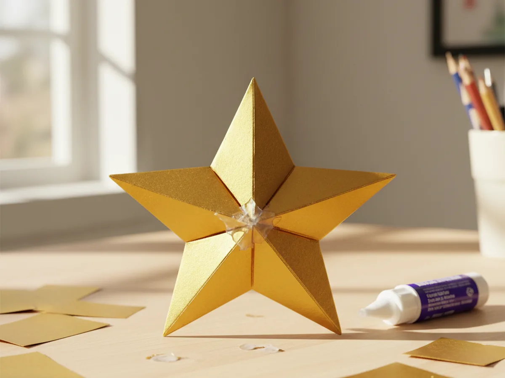
20. Paper Gift Tags
Cut small rectangular or rounded tag shapes from cardstock, punch a hole at one end, and let your child decorate each one however they like: drawings, stamped shapes, stickers, or glitter glue patterns. Thread a piece of twine through the hole and you have a set of completely personalized gift tags. A kindergartener who makes their own tags feels genuinely part of the gift-giving tradition. ⭐
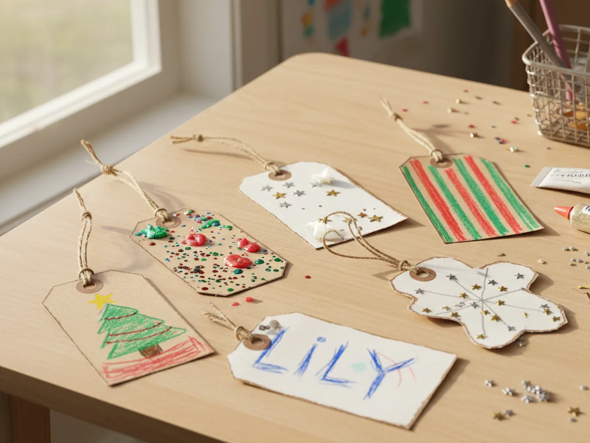
Final Thoughts
Whether you pick just one project this week or work through the whole list together, these Christmas paper crafts for kindergarten are guaranteed to bring a little extra magic to your holiday season. The supplies are simple, the results are genuinely sweet, and the time you spend making them together is something both of you will remember long after the decorations come down. 🎁
More Crafts You'll Love
If your kindergartener is loving all things Christmas paper crafts, these two articles are perfect for your next session together.
- 25 Adorable Christmas Paper Crafts Kids Will Beg to Make Every Year
- Paper Christmas Tree Craft for Kids
There are so many ways to make the holidays feel special with nothing more than paper, scissors, and a little creativity. Grab your supplies and enjoy every crafty moment this December. ❄️